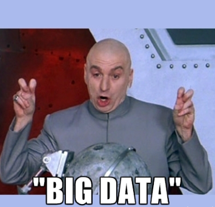
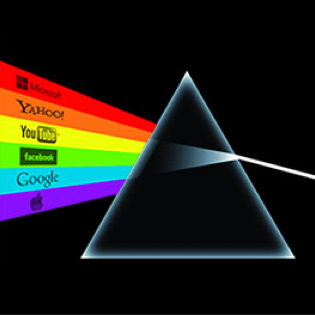

What is ‘open data’ and why should we care?
You can’t go 10 minutes without hearing about data these days. “Data blogs.” “Big data.” “Data protection.” “Data.” “Daahta.”
And let’s face it – whether it’s about ‘men in black’ reading our emails or some MP claiming expenses for his dog-sitter, a lot of news is shaped by how information is stored, secured or shared.
But what is ‘open data’, and how does it fit in? Here are 10 things you need to know.
1. Open data is data that’s available to everyone to access, use and share. Yep, even your nan.
(Ed: That's not my nan.)
… If groups make information they hold available for everyone, it can be used for all sorts of things by all sorts of people. Whether it’s about government spending, new scientific research or even the ’danceability’ of tracks for your next house party playlist.
2. But open data should be easy to access. Especially for your nan
… Open data is only useful if it’s shared in ways that people can actually understand. It needs to be shared in a standardised format and easily traced back to where it came from.
3. Open data isn’t the same as big data, but big data can be open data too

… When people talk about ‘big data’ they mean a lot of data. Obviously. But ‘big data’, like government statistics on health care, is often closed to the public (or expensive to access, like the terrifyingly-named TWITTER FIREHOSE). Opening up big data lets people use it to spot trends, fill gaps and improve services.
4. Oh, and it’s also not the same as ‘shared data’

… If you’re worried about big companies being fed all your private details, that’s got nothing to do with open data. Groups sharing information with each other is different from opening it up for all to access. Your private data should only be open if you choose to share it. (But if you want to know who’s accessing or sharing your data, open data can help.)
5. Open data is good for democracy
… If citizens know about their governments they can hold leaders to account, make more informed decisions and demand better services. Open data can also help governments stay on their toes and make better policies for society, the economy and the environment.
6. Open data can help fight crime
… It’s helped people in London to track stolen bikes and police in Vancouver to stay one step ahead of criminals.
7. Open data is good for your health
… With tools like FoodTradeMenu using it to help restaurants make sure they don’t serve you food you’re allergic to without realising.
8. Open data can save lives
… It helps groups to coordinate aid delivery in humanitarian disasters.
9. Open data helps you get around your city, and saves you money
… Apps like CityMapper use open data from groups like Transport for London to help you find the quickest and cheapest way to get from A to B. Even maps can be open, like OpenStreetMap, which powers map data for websites and humanitarian crises relief around the world.
10. Open data is actually really pretty
… Look what happened when NATS used UK radar and European flight plan data to visualise air traffic on a typical summer’s day in 2013.
Yay to making data more useful!
(Or less, depending on how you use it.)
Want to know more? This 3-minute video will give you the low-down
Image credits:
1: Gif: Giphy
5: Image: Wheresmysammich
6: Gif: Giphy
8: Image: Flickr user Commander, U.S. 7th Fleet
9: Gif: Giphy